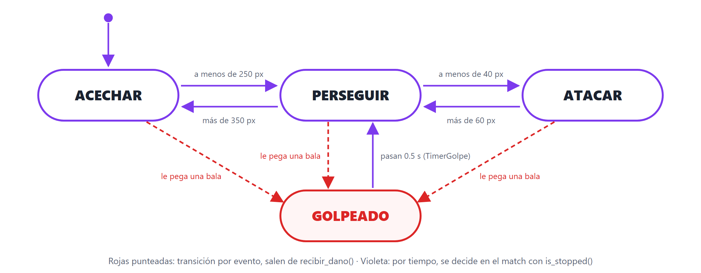

El jefe piensa
La máquina de estados de la clase anterior, armada en vivo sobre el élite: acechar, perseguir, atacar y sentir el golpe. Después, la histéresis con los números a la vista y un personaje que dispara solo.
“Se dibuja el diagrama. Cada flecha es un if.”
Cómo va a ser la clase de hoy
🔴 Seis bloques en vivo
Sobre el proyecto clase-05 de la semana pasada. Los bloques 1 a 5 tocan un solo script: slime_elite.gd.
- Dos estados:
ACECHAR⇄PERSEGUIR, con etiqueta - Atacar: deja de ser kamikaze y pega cada segundo
- Golpeado: una flecha que entra por un evento
- Que se note: una función
cambiar_estado() - Histéresis: por qué dos números en cada ida y vuelta
- Disparos: balas automáticas al enemigo más cercano
👐 Las reglas de siempre
- El código se escribe, no se pega.
- Cada bloque termina con un punto de control en pantalla o en la consola.
- Antes de cada bloque, se mira el diagrama: qué estado y qué flechas se agregan.
enemigo.gd queda igual. El slime común sigue siendo kamikaze a propósito; el que piensa es el jefe.Al final, un ejercicio en papel: diseñar un enemigo propio con sus estados.
Lo que ya hace el élite, y lo que hereda
# slime_elite.gd, como quedó en la Clase 5+ extends Enemigo func _ready(): super() vida = 5 velocidad = 35 dano = 25 func morir(): print("💜 ¡Cayó un élite!") super()
recibir_dano(1) a todo el grupo "enemigo". Es la que golpea al jefe en el bloque 3.Viene de Enemigo | Hoy… |
|---|---|
_process: perseguir siempre | se reemplaza por la máquina |
_on_body_entered: kamikaze | se anula (bloque 2) |
recibir_dano() | se amplía con super() (bloque 3) |
morir() | queda igual |
slime_elite.tscn a mano dentro de Enemigos, lejos del jugador, y destildar Autostart en el Timer del Spawner. Al terminar la clase, se deshace.La hija trae su propio _process
Sobreescribir una función
Si la clase hija define una función con el mismo nombre que la madre, para ese objeto corre la de la hija.
- Con
super()adentro: hace lo de la madre y además lo suyo (como el_readydel élite) - Sin
super(): la de la madre no corre. Se reemplaza
El _process del jefe va sin super(): si no, perseguiría siempre, además de la máquina.
El jugador, una sola vez
El slime común busca al jugador en cada frame. El jefe lo guarda en una variable en _ready(): es siempre el mismo nodo.
var jugador = null # en _ready(): jugador = get_tree().get_first_node_in_group("jugador")
Estado.keys()[estado] convierte el número del enum en texto. Es la mejor herramienta para depurar una máquina.La etiqueta LabelEstado y un élite de prueba
Ver lo que piensa
- Un
Labeldentro de la escena del élite, arriba de la cabeza. Cada élite que nazca trae el suyo; los slimes comunes no. - El texto lo va a escribir el código con el estado actual. El que se pone en el editor es solo para verla mientras se acomoda.
- Un élite a mano en la arena, lejos del jugador: así se prueba enseguida, sin esperar ocho slimes.
scale = Vector2(2, 2), que agranda también la etiqueta. En el juego se ve al doble que en el editor.- En FileSystem, doble clic en
slime_elite.tscn - Seleccionar la raíz
SlimeElite→ botón + (Añadir Nodo Hijo, Ctrl+A) → buscarLabel→ Create (Crear) - F2 → renombrarlo LabelEstado, letra por letra
- Inspector: Text =
ACECHAR, Horizontal Alignment (Alineación Horizontal) = Center - Con Move (W), llevarla arriba de la cabeza. Ctrl+S
- Tamaño: Theme Overrides → Font Sizes (Anulaciones de Tema → Tamaños de Fuente): tildar y poner 8 a 10
- En
arena.tscn: seleccionarEnemigos→ ícono de cadena (Instanciar Escena Hija, Ctrl+Shift+A) →slime_elite.tscn→ llevarlo a una esquina
ACECHAR ⇄ PERSEGUIR
slime_elite.gd- Un
enum Estadocon dos nombres y una variableestadoque arranca enACECHAR - Números nuevos en
_ready(): vida 12, velocidad 70, daño 15. Y se guarda al jugador - Un
_processpropio, sinsuper(), con unmatch: en cada rama, primero hacer, después decidir acechar(): hacia el jugador a mitad de velocidad y medio transparente. Se nota que todavía no se decideperseguir(): lo mismo a toda velocidad, opaco- Al final de
_process, la etiqueta conEstado.keys()[estado]
if d < 250: estado = Estado.PERSEGUIR # una flecha
- En la escena del élite, clic en el ícono de script de la raíz para abrir
slime_elite.gd - Escribir el script siguiendo las ideas de la izquierda
- Ctrl+S, pestaña
arena.tscnal frente y F6
jugador es null. El nombre del grupo tiene que ser idéntico al de jugador.gd, mayúsculas incluidas ("jugador" no es "Jugador").Atacar: quieto, y un golpe por segundo
⏱️ Un Timer one shot como “enfriamiento”
En cada frame de ATACAR se pregunta: ¿el Timer está frenado? Si sí, pega y lo arranca. Mientras corre, no pega.
pega
pega
pega
if $TimerAtaque.is_stopped():
jugador.recibir_dano(dano)
$TimerAtaque.start()
🚫 Anular el kamikaze
Enemigo conecta body_entered a _on_body_entered, que pega y se borra. El jefe la redefine vacía:
func _on_body_entered(body): pass # el jefe no se sacrifica
La conexión la sigue haciendo el super() de _ready(), pero ahora llama a la función de la hija, que no hace nada.
Tercer estado: ATACAR
- Un
Timernuevo en la escena del élite: el reloj del golpe ATACARse suma alenumPERSEGUIRpasa a tener dos salidas: a menos de 40 px,ATACAR; a más de 350,ACECHAR- La rama
ATACARllama aatacar()y vuelve aPERSEGUIRa más de 60 px atacar()no mueve al jefe: si el Timer está frenado, pega y lo arranca_on_body_enteredconpass: el jefe deja de ser kamikaze
- En
slime_elite.tscn, seleccionarSlimeElite→ + →Timer→ Create - F2 → TimerAtaque
- Inspector: Wait Time (Tiempo de Espera)
1, One Shot ✓, Autostart ✗. Ctrl+S - En el script: el
enum, las flechas,atacar()y la anulación - F6 y dejarse alcanzar
pass (Ctrl+K): vuelve a ser kamikaze. Destildar One Shot: pega una sola vez y nunca más (¿por qué?).Una flecha que no sale del match

| Flecha | Disparador | Dónde vive |
|---|---|---|
| entre los tres de arriba | distancia | el match |
de cualquiera a GOLPEADO | evento: un golpe | recibir_dano() |
de GOLPEADO a PERSEGUIR | tiempo: 0.5 s | el match |
(position - jugador.position). Y no lleva delta: no es un movimiento por frame, es un salto de 20 px, una sola vez.Cuarto estado: GOLPEADO
- Otro
Timer: medio segundo congelado GOLPEADOse suma alenumy su rama va al final delmatch: se pone rojo y, cuando el Timer termina, se le va el rojo y vuelve aPERSEGUIR- La flecha de entrada no está en el
match: está enrecibir_dano() - Primero
super(cantidad): la madre resta la vida y decide si muere - Solo si sobrevivió: empujón de 20 px, arrancar el Timer y pasar a
GOLPEADO
func recibir_dano(cantidad): super(cantidad) if vida > 0: # empujón, Timer y flecha
- En
slime_elite.tscn: + →Timer→ F2 → TimerGolpe - Wait Time
0.5, One Shot ✓, Autostart ✗. Ctrl+S - En el script: el
enum, la rama, el rojo yrecibir_dano() - F6. Los golpes los da la bomba: Enter
Color.WHITE adentro de la función del rojo: nunca se ve rojo.Qué hace cada parte nueva de slime_elite.gd
| Línea | Qué hace y por qué |
|---|---|
enum Estado { … } | Nombres para los estados. Por dentro son 0, 1, 2, 3; en el código se lee la palabra. |
var estado = Estado.ACECHAR | La única pregunta: ¿qué está haciendo ahora? Arranca donde está el punto del diagrama. |
func _process(delta) sin super() | Reemplaza al de Enemigo. Los slimes comunes siguen usando el de la madre. |
match estado: | Elige una rama por frame. En cada una: hacer, y después decidir. |
$TimerAtaque.is_stopped() | “¿Ya pasó el segundo?”. Sin variables extra ni contar delta a mano. |
func _on_body_entered(body): pass | Anula el kamikaze: misma función, cuerpo vacío. |
super(cantidad) + if vida > 0 | La madre resta la vida y decide si muere. Solo si sobrevivió, hay golpe que sentir. |
Lo que pasa una sola vez, al cambiar de estado
Hoy: repartido por todos lados
estado = …aparece en seis lugares- La etiqueta se reescribe cada frame
- El color se pone en
acechar(),perseguir()y en el rojo, también cada frame - ¿Un color para atacar? Habría que tocar cada flecha
Mejor: una función que cambia el estado
func cambiar_estado(nuevo): estado = nuevo # y todo lo que tiene que pasar # UNA vez al entrar a un estado
Cada flecha pasa a ser cambiar_estado(Estado.X). Un solo lugar para el cartel, el color, un sonido o una animación.
cambiar_estado(): un color y un aviso por estado
- Guarda el estado nuevo
- Escribe su nombre en
LabelEstado - Lo avisa por consola:
Jefe → PERSEGUIR - Pone el color con otro
match:ACECHARmedio transparente,PERSEGUIRnormal,ATACARnaranja,GOLPEADOrojo
match de _process corre 60 veces por segundo (lo que el estado hace); cambiar_estado() corre una vez por flecha (lo que pasa al entrar).- Escribir
cambiar_estado()debajo de_process - Al final de
_ready():cambiar_estado(Estado.ACECHAR) - Ctrl+F
estado = Estado: reemplazar las seis flechas (cinco en elmatch, una enrecibir_dano) - Borrar lo repetido: la etiqueta del final de
_process, los colores deacechar(),perseguir()y del rojo, y elColor.WHITE
print en _process: 60 líneas por segundo.Dos números en cada ida y vuelta
🌡️ El termostato
Prende la estufa a 19 °C y la apaga a 21 °C. Si hiciera las dos cosas a 20, prendería y apagaría sin parar. Ese margen entre entrar y salir se llama histéresis.
El jefe, mientras persigue y ataca:
ATACAR
como estaba
PERSEGUIR
Lo mismo con 250 (lo ve) y 350 (lo pierde).
Sin margen, parpadea
Con 40 y 40, un jugador que se aleja despacio hace que el jefe cambie de estado casi en cada frame: en ATACAR está quieto y la distancia crece; en PERSEGUIR es más rápido y la distancia baja. Cada pasito cruza la línea.
Medido en la demo 08: con 40 / 40, unos 40 cambios por segundo. Con 40 / 60, 2 o 3.
Romperlo a propósito: 40 / 40 contra 40 / 60
- Los cuatro números pasan a variables con nombre:
distancia_ver,distancia_perder,entrar_a_atacar,salir_de_atacar. Es lo único que queda para siempre - Un contador provisorio en
cambiar_estado(): suma 1 por cambio y lo muestra en la etiqueta. Mide el parpadeo - Se rompe: salir de atacar a 40, igual que entrar
- Se arregla: vuelve a 60, y se compara
var entrar_a_atacar = 40 var salir_de_atacar = 60 # probar con 40
- Variables arriba; en el
match, cada número por su variable. F6: anda igual - Contador:
cambios += 1y la etiqueta connombre + " " + str(cambios) salir_de_atacar = 40y, en el jugador,velocidad = 50(más lento que el jefe)- F6, dejarse alcanzar y alejarse despacio en línea recta
- Volver a 60 y repetir. Al final: velocidad 200, sin contador
Un arma automática, y el jefe que la siente
Quién le pide qué a quién
- El jugador tiene un
Timer: cada 0.4 s busca al enemigo más cercano - Instancia una bala (otro molde, otro
Area2D) y le da la dirección - La bala avanza sola; al tocar un
Area2D, pregunta si es unEnemigo - Si lo es, le pide
recibir_dano(1), el mismo botón que la bomba - El jefe ya sabe qué hacer: empujón y
GOLPEADO
El más cercano
Un for sobre el grupo "enemigo" con un récord: cada vez que aparece uno más cerca, pasa a ser el récord. Arranca en INF, “infinito”.
GOLPEADO. Puede ser a propósito; si no, TimerGolpe a 0.3.La escena bala.tscn
bala.gd_ready(): conectaarea_entered(tocar otroArea2D) y el fin delTimerVidaaqueue_free_process(): avanza en línea recta,direccion * velocidad * delta_draw(): una pelotita condraw_circle(). No hace falta imagen- Al chocar:
area is Enemigopregunta por la clase, no por el grupo. Si lo es, le pega y la bala se borra
TimerVida es el “tiempo de vida”: una bala que no le pega a nada desaparece sola a los 2 s.- Scene → New Scene (Escena → Nueva Escena) → Other Node (Otro Nodo) →
Area2D→ F2 → Bala - + →
CollisionShape2D. Inspector: Shape (Forma) → New CircleShape2D, radio6 - Seleccionar
Bala→ + →Timer→ F2 → TimerVida: Wait Time2, One Shot ✓, Autostart ✓ - Ctrl+S →
bala.tscn - Clic derecho en
Bala→ Attach Script (Añadir Script) →bala.gd→ Create
El jugador dispara solo
- Un nodo
Balasvacío en la arena, comoEnemigos. No van dentro del jugador: un hijo se mueve con su padre, y las balas se desviarían al caminar - Nombre único (
%): cualquier script de la escena lo encuentra con%Balas, esté donde esté. Sin eso, la rutaget_node("../Balas") - En el jugador: el molde con
preload, el Timer conectado adisparar(), yenemigo_mas_cercano()
%Balas.add_child(bala) # recién acá aparece
- En
arena.tscn: raíz → + →Node2D→ F2 → Balas, en (0, 0) - Clic derecho en
Balas→ Access as Unique Name (Acceder como Nombre Único): aparece un % - Seleccionar el jugador → + →
Timer→ F2 → TimerDisparo: Wait Time0.4, Autostart ✓ - En
jugador.gd: el molde, la conexión y las dos funciones. F6
Cuando “no anda”: los sospechosos de hoy
| Síntoma | Casi siempre es… |
|---|---|
| El jefe no se mueve | jugador es null: el grupo se escribió distinto ("jugador" ≠ "Jugador"), o el élite a mano corre antes que el Jugador. Poner el grupo desde Node → Groups (Nodo → Grupos) o subir al Jugador en el árbol. |
| Los slimes comunes también cambiaron | Se modificó enemigo.gd. Todo lo del jefe va en slime_elite.gd. |
Node not found: "TimerAtaque" | El nodo no existe en slime_elite.tscn, o tiene otro nombre (mayúsculas incluidas). |
| Pega todo el tiempo, no cada segundo | Falta el $TimerAtaque.start() después de pegar. |
| Parpadea entre dos estados | El mismo número en la flecha de ida y la de vuelta. Falta el margen. |
| Queda rojo para siempre | El Color.WHITE no está en la salida de GOLPEADO (o falta cambiar_estado en esa flecha). |
| Las balas no salen | TimerDisparo sin Autostart, o no hay enemigos en pantalla. |
add_child on a null value al disparar | Falta Access as Unique Name en Balas, o se llama distinto. |
Desafío: el aviso antes del golpe
- Un estado nuevo,
AVISO, entrePERSEGUIRyATACAR: a menos de 40 px, el jefe pasa aAVISOen vez de atacar - En
AVISOse queda quieto y amarillo durante 0.4 s (unTimerAviso) - Al terminar el Timer: si el jugador sigue a menos de 60 px,
ATACAR; si no,PERSEGUIR
enum, una rama en el match y un color en cambiar_estado(). Nada más.Es el aviso de Hollow Knight: el jugador que lo lee a tiempo, se salva. El jefe se vuelve justo.
Diseñar un enemigo nuevo, antes de programarlo
✏️ En la hoja, en este orden
- La idea: un nombre y una frase. ¿Qué lo hace distinto de la horda y del jefe?
- Los estados: 3 o 4 círculos con nombre en mayúsculas. Un punto marca dónde arranca
- Las flechas: cada una con su disparador, distancia, tiempo o evento, y su número
- Qué hace en cada estado: la tabla de abajo, una fila por estado
| Estado | Cada frame hace… | Al entrar… |
|---|---|---|
ACECHAR | viene a mitad de velocidad | medio transparente |
🎮 Las reglas del survivors
- Ningún estado lo saca de la pantalla: nada de patrullar ni de huir. Siempre vuelve al jugador
- Si una flecha va y vuelve por distancia: dos números (histéresis)
- Si pega fuerte, que avise antes: un estado quieto y de otro color
- Que se lo pueda leer mirándolo: un color o un gesto por estado
Así podría quedar una hoja: el Embestidor
“Se queda mirando, apunta y carga en línea recta. Si erra, queda agotado: es el momento de pegarle.”
Estados y flechas
| De → a | Disparador |
|---|---|
ACECHAR → APUNTAR | distancia: a menos de 200 px |
APUNTAR → ACECHAR | distancia: a más de 300 px |
APUNTAR → EMBESTIR | tiempo: 0.6 s |
EMBESTIR → AGOTADO | tiempo: 0.5 s |
AGOTADO → ACECHAR | tiempo: 1.5 s |
Arranca en ACECHAR. 200 / 300: dos números, para que no dude en el borde.
Qué hace en cada estado
| Estado | Cada frame | Al entrar |
|---|---|---|
ACECHAR | viene despacio | color normal |
APUNTAR | quieto, mira al jugador | amarillo: el aviso |
EMBESTIR | en línea recta, al triple de velocidad; pega si toca | guarda la dirección; rojo |
AGOTADO | quieto, no pega | gris y medio transparente |
De la hoja a Godot, con lo de hoy
| En la hoja | En Godot |
|---|---|
| El enemigo | Escena heredada de slime.tscn + script extends Enemigo |
| Cada círculo | Un valor del enum Estado y una rama del match |
| Flecha por distancia | Un if d < … en la rama del estado de origen |
| Flecha por tiempo | Un Timer one shot: start() al entrar, is_stopped() para salir |
| Flecha por evento | En la función que lo recibe: recibir_dano() o una señal |
| “Cada frame hace…” | Una función por estado, llamada desde su rama |
| “Al entrar…” | Una línea en cambiar_estado() |
| Que aparezca en el juego | Una línea más en el spawner.gd |
El orden, como hoy
- La escena heredada y la
LabelEstado - Los dos primeros estados y su flecha. F6
- Un estado más por vez, probando cada uno
cambiar_estado()con los colores- Ajustar los números jugando
Todo lo que se armó hoy
| Pieza | Para qué sirve | Bloque |
|---|---|---|
enum + match | Nombrar los estados y ejecutar solo la rama del estado actual | 1 |
Sobreescribir sin super() | Que el jefe tenga su propio _process sin tocar a la horda | 1 |
Estado.keys()[estado] | Ver el estado en una etiqueta: depurar mirando | 1 |
Timer one shot + is_stopped() | Hacer algo cada X segundos dentro de un estado | 2 |
Anular con pass | Apagar un comportamiento heredado | 2 |
| Flecha por evento | Entrar a un estado desde recibir_dano(), fuera del match | 3 |
cambiar_estado() | Un solo lugar para lo que pasa una vez al cambiar | 4 |
| Histéresis | Dos umbrales con nombre: el estado no parpadea en el borde | 5 |
Bala + Timer + %Balas | Un arma automática que usa el mismo recibir_dano() que la bomba | 6 |
El TP de la semana: el jefe piensa
📝 TP 4: el jefe del survivors
- Lo de hoy, sobre el TP3: el élite con sprite animado y barra de vida
- Los golpes los dan las balas automáticas, no la bomba
- Colores por estado y un aviso por consola en cada cambio
- Ajustar los números hasta que el jefe se sienta bien
📚 Recursos
- Docs: GDScript basics, secciones
enumymatch, endocs.godotengine.org - La referencia de
Timer - GDQuest: Finite State Machine (para ir más lejos)
La semana que viene el juego se viste: menú, HUD, sonido y game feel. · Logo de Godot © Godot Foundation — CC BY 4.0.